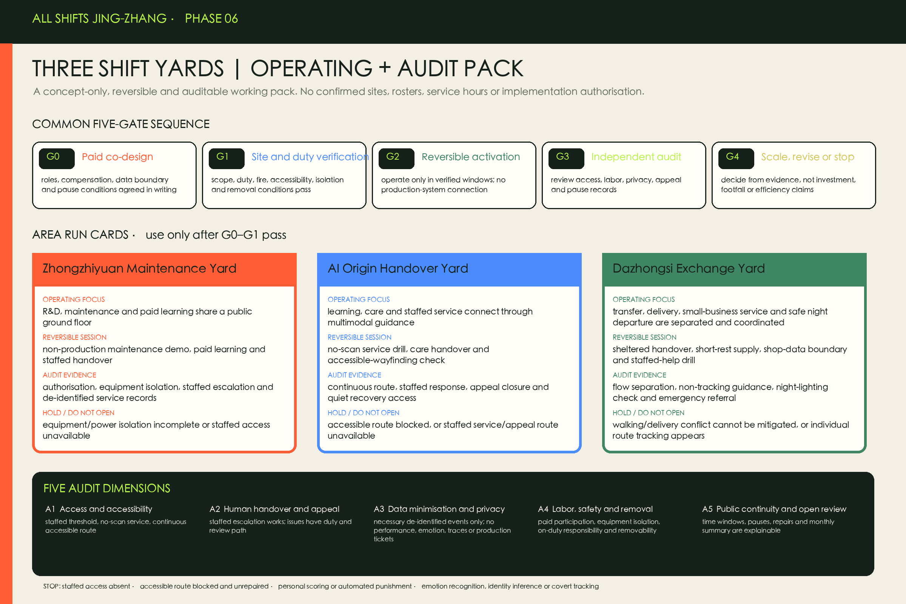

24-hour Shift Station
Rest, water, toilets, lockers and charging; no scan required.
One city, every shift.
One Shift Commons Spine, three Shift Yards, two service wings and twelve Shift Stations. All polygons are repository provisional rough geometry, not official redlines.

Four concept zones cover the provisional extent. Building footprints and retain-renovate-demolish remain survey-dependent design propositions.

Zhongzhiyuan: R&D meets maintenance; AI Origin Community: learning meets care; Dazhongsi: exchange meets small business.

A complete night-time walking–rail support chain combines recovery landscape, public space, Shift Stations and staffed help. Road and utility conditions await specialist confirmation.

AI assists equipment, routes and service handover; it does not monitor or score workers. Every scenario has human access, appeal and shutdown conditions.
Rest, water, toilets, lockers and charging; no scan required.
Uses authorized equipment logs for fault finding; never scores workers.
One-step human escalation with an auditable handover trail.
Separates delivery, short stay, rest and pedestrian flows.
Retains cash and staffed counters for warm meals and essentials.
Visual, audio, tactile and staffed guidance operate in parallel.
Equipment, data-safety and service training count as paid time.
Publishes purpose, data, duty owner, appeal and shutdown status.
Coordinates lighting, visibility, crossings and night transit information.
A low-stimulus short-rest space for sensory needs, night shifts and caregivers.
Owner-controlled data supports inventory, translation and compliance reminders.
Provides staffed emergencies, labor-rights referral and system appeals.

Announcement tasks 1.3–1.5 and agent.1–agent.6 are mapped in the compliance matrix; self-check status is recorded in self_check.json.
| ID | Project | Phase | Dependency |
|---|---|---|---|
| R-01 | 12 lightweight Shift Stations | Near term | Operations first; locations require survey |
| R-02 | Three Shift Yard ground-floor retrofits | Near term | Prioritize safe reusable buildings |
| R-03 | Safe shift-change route | Near term | Does not replace road/traffic approval |
| R-04 | Shift Zero Pavilion and Honor Wall | Mid term | Open design call and rights clearance |
| R-05 | Open Maintenance Depot | Mid term | Equipment and fire safety pending |
| R-06 | Accessible human-handover network | Mid term | Staffing and service SLA first |
| R-07 | Public Algorithm Duty Protocol | Long-term governance | Policy before software |
| R-08 | Annual All Shifts City Week | Long-term operation | Concept only; not a confirmed government event |
Quarterly handover audits, monthly open-maintenance days, semiannual accessibility and human-fallback drills, and an annual All Shifts City Week. Worker participation is paid.
Three yards use one five-gate sequence, five audit dimensions and seven pause lines. This is a concept working pack awaiting site verification, not a confirmed site, roster, service hour or implementation authorisation.

Three printable templates turn “verify first, co-design next, then operate” into a fillable, handover-ready, pausable workflow; they are not implementation authorisation.


Not a confirmed project or construction scheme. Paid co-design and site checks first decide whether it can activate; only then may non-production maintenance demos, paid learning, staffed handover and appeal services operate.


A conceptual people-service-space workflow, not a confirmed roster, field survey or implementation authorisation. Every time window retains staffed access, no-scan service and an accessible route.


A mute-comprehensible conceptual tour: four time windows connect maintenance, learning and care, transfer, and safe night departure through one staffed-service and accessible-route logic. It is not site footage, a confirmed roster or implementation authorisation.
AI only assists; staffed access, no-scan service and a continuous accessible route remain available. If staffed access is missing, accessibility is interrupted, covert tracking, personal scoring, automated punishment or production-system connection appears, the workflow shown in this tour pauses rather than continues.
These images communicate spatial experience; they are not site photos, final designs or official evidence.


The official announcement and taskbook define scope and tasks; six international cases are mechanism references only. Boundary, controls, transport, title, utilities, heritage and actual shift needs are explicit assumptions. Diagrams and this fully offline page are agent-authored.